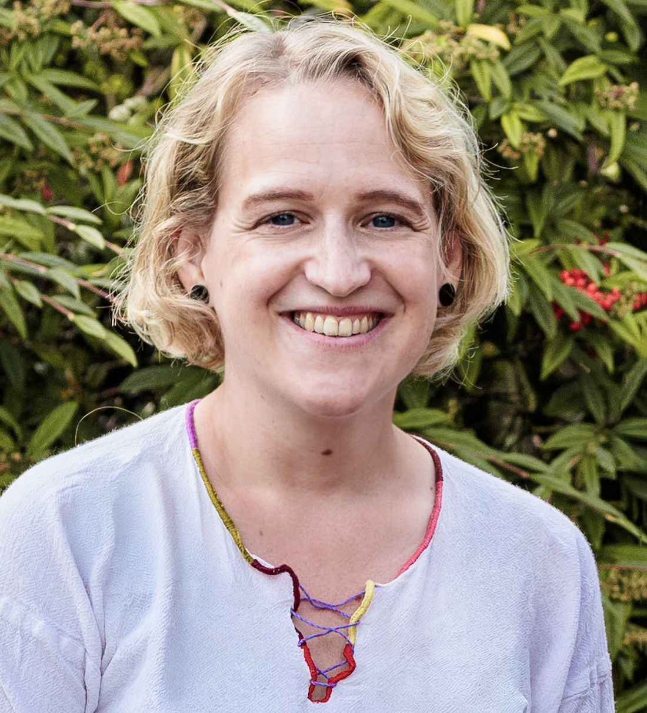

Freie Journalistin · Multimediaredakteurin · Sprecherin

Willkommen auf meiner offiziellen Homepage! Seit 2017 arbeite ich als selbstständige Journalistin, in den letzten Jahren vor allem für ein Kölner Lokalradio (domradio.de) und eine Zeitung (rundschau-online.de). Das nötige Handwerkszeug dazu erlernte ich on the Job sowie in einer multimedialen Ausbildung der Goethe-Universität Frankfurt, die auf mein geisteswissenschaftliches Studium und mehrere Medien-Praktika folgte.
Redaktionelle Abläufe, die Arbeit in Content-Management-Systemen und das Denken in prägnanten Titeln und Teasern sind mir durch die jahrelange Tätigkeit als Online- und Social-Media-Redakteurin vertraut. Auch Schnittsysteme und Bildbearbeitungsprogramme sowie das Sprechen vor dem Mikro sind mir nicht fremd. Für letzteres habe ich mehrwöchige Trainings bei der staatlich geprüften Sprecherin und Sprecherzieherinerin Claudia Maria Brinker absolviert.
Ich schaue gern über den Tellerrand und habe neben meiner selbstständigen Tätigkeit Ausflüge ins TV und Freiwilligenmanagement unternommen. Zuvor war ich sechs Jahre lang in der Kommunikationsabteilung eines internationalen Hilfswerks tätig, wo ich für die Lancierung von Kampagnen zuständig war. Dazu gehörte das Verfassen von Artikeln, die rasche Zusammenstellung von Informationen und die aktive Mitgestaltung der Spender-Zeitung.
Ich bin ein kreativ denkender und strukturierter Mensch. Dabei war und ist es für mich selbstverständlich, mich ständig weiterzuentwickeln. So finde ich auch im Alltag mit Kleinkindern immer wieder die Zeit, Nachrichten zu verfolgen und Weiterbildungen zu besuchen, um mein Wissen auf einem aktuellen Stand zu halten. Und wenn ich mal Zeit für mich brauche, bin ich gerne zu Fuß oder mit dem Rad in der Natur unterwegs, treibe Sport oder entspanne bei einem Besuch in einem Museum oder einem anderen kulturellen Event.
Möchten Sie mich kontaktieren? Haben Sie einen Auftrag oder noch Fragen? Dann schreiben Sie mir gern!
t.muelleralander@gmail.comTeresa Müller-Alander
Kirchberger Str. 14
59335 Köln
Telefon: 0157 / 35385171
E-Mail: t.muelleralander@gmail.com
Verbraucherstreitbeilegung / Universalschlichtungsstelle:
Wir sind nicht bereit oder verpflichtet, an Streitbeilegungsverfahren
vor einer Verbraucherschlichtungsstelle teilzunehmen.